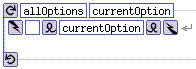
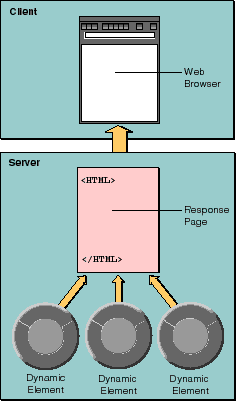

PATH
WebObjects 4.0 Documentation >
WebObjects Developer's Guide
 Table of Contents
Table of Contents  Previous Section
Previous Section
Server-Side Dynamic Elements
Server-side dynamic elements are the simplest type of element to create and are supported by all web browsers. Needless to say, they are the most commonly used.
Server-side dynamic elements produce HTML at run-time. This HTML is composed of the same HTML elements you use when you're creating a static web page. Like static elements, dynamic elements display formatted text, images, forms, hyperlinks, and active images. WebObjects provides several dynamic elements. For a complete list, see the online book Dynamic Elements Reference.
For an example of dynamic elements in action, consider an application whose first page contains a list of user choices of actions to perform. This page is shown in Figure 9.
Figure 9. Main Page
This list could be hard-coded into an HTML page, but it is more extensible if it the list is produced using dynamic elements in a component. (Because this is the first component in the application, it is called Main.) Figure 10 shows how this same part of the page looks in WebObjects Builder.

Figure 10. Main Page in WebObjects Builder
The elements shown in Figure 10 are a WORepetition, a WOHyperlink, and a WOString. The WORepetition element corresponds to a for loop in C code. That is, it iterates through a list of items and, for each item in that list, prints its contents. In this example, the contents are a WOHyperlink and a WOString. The WOHyperlink is a hyperlink whose destination is determined at run-time, and the WOString is a string whose contents are determined at run-time.
When you run the application, the WORepetition walks through an array of strings that the component's code supplies. For each item in the array, it displays a hyperlink whose text is the text of the string item in the array. In this array, there are two strings-"See surfshop information" and "Buy a new sailboard"-so the WORepetition creates two hyperlinks, each containing the appropriate text.
As the name implies, server-side dynamic elements operate entirely on the server (see Figure 11). That is, when a server-side dynamic element is asked to draw itself, it produces HTML code that should form part of a page, the page is constructed, and then the entire page is sent from the server to the client. Later in this chapter, you'll learn about client-side components, which transport values and state from the server to the client and then draw themselves on the client machine.

Figure 11. Server-Side Dynamic Elements
Table of Contents  Next Section
Next Section